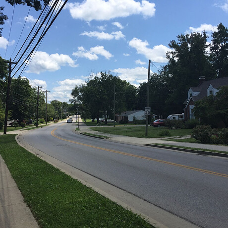
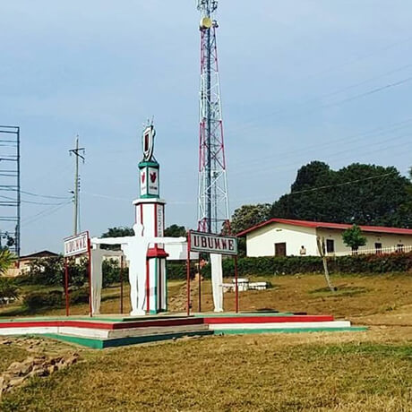

Conoce un poco mas los lugares de los que proceden tus colegas en línea
Todo ser humano es un artista, un ser de la libertad, llamado a participar en la transformación y reforma de las condiciones, el pensamiento y las estructuras que conforman e influyen en nuestras vidas.
— Joseph Beuys
La ciudad de TripleTen ha reunido a profesionales de diferentes rincones del mundo. Hoy, la Galería de Arte TripleTen se enorgullece de presentar historias y fotografías de algunas de las personas que dedican su tiempo y esfuerzo a hacer que los futuros profesionales de la tecnología de esta ciudad se sientan como en casa. Cada uno de nosotros tiene una historia única sobre el lugar del que procede. No dudes en añadir a nuestra colección tu propia historia y una obra de arte visual dedicada a tu ciudad natal. No importa de dónde seas, nos alegra que seas nuestro vecino.


-
Cricieth, Gales
Compra esta obra como NFT
Las ruinas medievales del castillo de Cricieth dominan la ciudad desde una roca que extiende sobre el mar. Se cree que fue construido por Llewelyn el Grande en el S. XIII. 800 años después, la autodenominada Perla de Gales en las costas de Snowdonia, se ha convertido en un popular destino turístico durante los meses de verano.A pocos pasos de camino al castillo, puedes disfrutar de los mejores helados del mundo en Cadwalader's, cuyo ingrediente secreto se rumorea que son algas marinas de la localidad. Otra cosa por la que es famosa Cricieth es por haber ganado el premio *Gales en flor* durante cinco años seguidos por sus espectaculares muestras florales alrededor de la ciudad. También vio nacer a David Lloyd George, el único galés que ha sido Primer Ministro del Reino Unido.
-
Berea, EE. UU.
Compra esta obra como NFT
Berea es una pequeña ciudad ubicada en la parte central de Kentucky. La ciudad está rodeada por hermosos bosques y campos. Es conocida como la capital de la artesanía del estado, y sus visitantes hallarán infinitas posibilidades para ir de compras: tiendas de joyas, velas y artículos de madera artesanales; galerías, talleres de vidrio y más. La ciudad celebra un festival anual que rinde tributo al "spoonbread", un platillo local hecho de pan de maíz y que se sirve con una cuchara de madera.Aunque, probablemente es mejor conocida por su universidad. El Berea College fue fundado en 1855 y fue la primera universidad sureña integrada racialmente, así como la primera en ser coeducacional. Algo que en cierta manera la hace única, es que no cobra colegiatura: cada estudiante recibe una beca del 100%.
-
Muramvya, Burundi
Compra esta obra como NFT
Muramvya es una de las 18 provincias de Burundi. Durante la época del reino, Muramvya fue su capital; y en 2017, gracias a su paisaje cultural y natural, se añadió a la Lista provisional de patrimonio mundial de la UNESCO. Se encuentra ubicada en el centro de Burundi, entre las capitales política y económica del país.Su clima es más bien frío durante la noche, pero durante el día, podrías pensar que estás en el paraíso. A sus 2,665 metros (8,743 ft) sobre el nivel del mar, el Monte Teza es uno de los lugares más fríos de la provincia. Pero es justo esa brisa fresca la que da pie a una de las más grandes plantaciones de té y café del país, y que representa la mayoría de las exportaciones de Burundi.El Parque nacional de Kibira, una de las mayores reservas de vida silvestre para los simios, ocupa parte de cuatro provincias, incluyendo Muramvya. Este parque nacional se encuentra en las cúspides de las hermosas montañas de la Divisoria Congo-Nilo, cuyas alturas oscilan entre 1,550 y 2,660 metros. Está lleno de hermosa vegetación, y es una fuente para los diversos ríos y arroyos que proporcionan agua alrededor del país.
-
Medellin, Colombia
Compra esta obra como NFT
Aunque mis raíces ancestrales están en Marinilla, un pintoresco pueblo cercano a Medellín, es esta ciudad la que representa todo lo que somos: cultura, alegría, trabajo, pasión… y una energía que simplemente no se encuentra en ningún otro lugar. Medellín no solo es una ciudad, es una experiencia que enamora, una combinación perfecta de mujeres hermosas, música, fiesta, flores, café, arte y gastronomía que cautiva a quien la visita, Y entre todo lo que la hace única, pero por encima de todo hay algo que destaca: ¡sus mujeres! Las mujeres paisas son simplemente inolvidables. Belleza natural, sensualidad, miradas que hipnotizan, sonrisas que desarman y una actitud firme, trabajadora, cariñosa y elegante que las convierte en un verdadero tesoro nacional. Tienen una forma de hablar que enamora, una mezcla de dulzura y fuerza que no se encuentra en otro lugar. Con ellas, Medellín brilla más, vibra más, y se vuelve aún más inolvidableCada año, en agosto, Medellín florece —literalmente— durante su icónica Feria de las Flores. Esta celebración es mucho más que un evento: es una manifestación del alma antioqueña. Conciertos, desfiles de silleteros que llenan las calles de color y orgullo, exposiciones de arte, concursos de trova, desfiles de autos clásicos y motos, y una ciudad entera volcada a celebrar lo que somos. Es imposible no dejarse contagiar por el ambiente festivo, por la música que retumba en cada esquina, por la alegría que se respira en el aire.VEN Y VISITA MEDELLIN, QUE EL RIESGO ES QUE TE QUIERAS QUEDAR